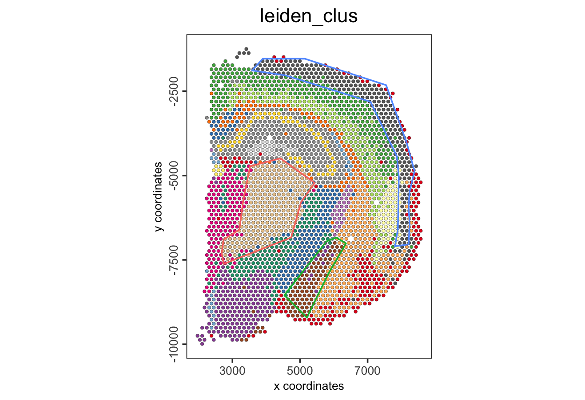

7 Visium Part II
Joselyn Cristina Chávez Fuentes
August 6th 2024
7.2 Differential expression
7.2.1 Gini markers
- Calculate the top marker genes per cluster using the gini method
gini_markers <- findMarkers_one_vs_all(gobject = visium_brain,
method = "gini",
expression_values = "normalized",
cluster_column = "leiden_clus",
min_feats = 10)
topgenes_gini <- gini_markers[, head(.SD, 2), by = "cluster"]$feats- Visualize
violinPlot(visium_brain,
feats = unique(topgenes_gini),
cluster_column = "leiden_clus",
strip_text = 6,
strip_position = "right",
save_param = list(base_width = 5, base_height = 30))
plotMetaDataHeatmap(visium_brain,
selected_feats = unique(topgenes_gini),
metadata_cols = "leiden_clus",
x_text_size = 10, y_text_size = 10)
dimFeatPlot2D(visium_brain,
expression_values = "scaled",
feats = sort(unique(topgenes_gini)),
cow_n_col = 5,
point_size = 1,
save_param = list(base_width = 15, base_height = 20))
7.2.2 Scran markers
- Calculate the top marker genes per cluster using the scran method
scran_markers <- findMarkers_one_vs_all(gobject = visium_brain,
method = "scran",
expression_values = "normalized",
cluster_column = "leiden_clus",
min_feats = 10)
topgenes_scran <- scran_markers[, head(.SD, 2), by = "cluster"]$feats- Visualize
violinPlot(visium_brain,
feats = unique(topgenes_scran),
cluster_column = "leiden_clus",
strip_text = 6,
strip_position = "right",
save_param = list(base_width = 5, base_height = 30))
plotMetaDataHeatmap(visium_brain,
selected_feats = unique(topgenes_scran),
metadata_cols = "leiden_clus",
x_text_size = 10, y_text_size = 10)
dimFeatPlot2D(visium_brain,
expression_values = "scaled",
feats = sort(unique(topgenes_scran)),
cow_n_col = 5,
point_size = 1,
save_param = list(base_width = 20, base_height = 20))
The Gini method is preferred when identifying genes that exhibit significant expression differences across clusters, highlighting genes with distinct expression patters between different clusters.
The Scran method is preferred for robust differential expression analysis, especially when addressing technical variability or differences in sequencing depth across spatial locations.
In practice, it is often beneficial to apply both methods and compare results for a more complete understanding of differential gene expression across clusters.
7.3 Enrichment & Deconvolution
Visium spatial transcriptomics does not provide single-cell resolution, making cell type annotation a harder problem. Giotto provides several ways to calculate enrichment of specific cell-type signature gene lists.
- Download the single-cell dataset
- Create the single-cell object
results_folder <- "results/"
python_path <- NULL
instructions <- createGiottoInstructions(
save_dir = results_folder,
save_plot = TRUE,
show_plot = FALSE,
python_path = python_path
)
sc_expression <- "data/brain_sc_expression_matrix.txt.gz"
sc_metadata <- "data/brain_sc_metadata.csv"
giotto_SC <- createGiottoObject(expression = sc_expression,
instructions = instructions)
giotto_SC <- addCellMetadata(giotto_SC,
new_metadata = data.table::fread(sc_metadata))
giotto_SC <- normalizeGiotto(giotto_SC)7.3.1 PAGE/Rank
Parametric Analysis of Gene Set Enrichment (PAGE) and Rank enrichment both aim to determine whether a predefined set of genes show statistically significant differences in expression compared to other genes in the dataset.
- Calculate the cell type markers
markers_scran <- findMarkers_one_vs_all(gobject = giotto_SC,
method = "scran",
expression_values = "normalized",
cluster_column = "Class",
min_feats = 3)
top_markers <- markers_scran[, head(.SD, 10), by = "cluster"]
celltypes <- levels(factor(markers_scran$cluster)) - Create the signature matrix
sign_list <- list()
for (i in 1:length(celltypes)){
sign_list[[i]] = top_markers[which(top_markers$cluster == celltypes[i]),]$feats
}
sign_matrix <- makeSignMatrixPAGE(sign_names = celltypes,
sign_list = sign_list)- Run the enrichment test with PAGE
- Visualize
cell_types_PAGE <- colnames(sign_matrix)
plotMetaDataCellsHeatmap(gobject = visium_brain,
metadata_cols = "leiden_clus",
value_cols = cell_types_PAGE,
spat_enr_names = "PAGE",
x_text_size = 8,
y_text_size = 8)
spatCellPlot2D(gobject = visium_brain,
spat_enr_names = "PAGE",
cell_annotation_values = cell_types_PAGE,
cow_n_col = 3,
coord_fix_ratio = 1,
point_size = 1,
show_legend = TRUE)
7.3.2 SpatialDWLS
Spatial Diffusion Weighted Least Squares (DWLS) estimates the proportions of different cell types or spatial gradients of gene expression across spots in a tissue.
- Create the signature matrix
sign_matrix <- makeSignMatrixDWLSfromMatrix(
matrix = getExpression(giotto_SC,
values = "normalized",
output = "matrix"),
cell_type = pDataDT(giotto_SC)$Class,
sign_gene = top_markers$feats)- Run the DWLS Deconvolution
- Visualize
# Plot DWLS deconvolution result with Pie plots
spatDeconvPlot(visium_brain,
show_image = FALSE,
radius = 50,
save_param = list(save_name = "8_spat_DWLS_pie_plot"))
7.4 Spatial expression patterns
7.4.1 Spatial variable genes
- Create a spatial network
visium_brain <- createSpatialNetwork(gobject = visium_brain,
method = "kNN",
k = 6,
maximum_distance_knn = 400,
name = "spatial_network")
spatPlot2D(gobject = visium_brain,
show_network= TRUE,
network_color = "blue",
spatial_network_name = "spatial_network")
- Rank binarization
ranktest <- binSpect(visium_brain,
bin_method = "rank",
calc_hub = TRUE,
hub_min_int = 5,
spatial_network_name = "spatial_network")- Visualize top results
spatFeatPlot2D(visium_brain,
expression_values = "scaled",
feats = ranktest$feats[1:6],
cow_n_col = 2,
point_size = 1)
7.4.2 Spatial co-expression modules
- Cluster the top 500 spatial genes into 20 clusters
- Use detectSpatialCorGenes function to calculate pairwise distances between genes.
spat_cor_netw_DT <- detectSpatialCorFeats(
visium_brain,
method = "network",
spatial_network_name = "spatial_network",
subset_feats = ext_spatial_genes)- Identify most similar spatially correlated genes for one gene
- Visualize
spatFeatPlot2D(visium_brain,
expression_values = "scaled",
feats = top10_genes$variable[1:4],
point_size = 1.5)
- Cluster spatial genes
- Visualize clusters
heatmSpatialCorFeats(visium_brain,
spatCorObject = spat_cor_netw_DT,
use_clus_name = "spat_netw_clus",
heatmap_legend_param = list(title = NULL))
- Rank spatial correlated clusters and show genes for selected clusters
netw_ranks <- rankSpatialCorGroups(
visium_brain,
spatCorObject = spat_cor_netw_DT,
use_clus_name = "spat_netw_clus")
top_netw_spat_cluster <- showSpatialCorFeats(spat_cor_netw_DT,
use_clus_name = "spat_netw_clus",
selected_clusters = 6,
show_top_feats = 1)
- Create metagene enrichment score for clusters
cluster_genes_DT <- showSpatialCorFeats(spat_cor_netw_DT,
use_clus_name = "spat_netw_clus",
show_top_feats = 1)
cluster_genes <- cluster_genes_DT$clus
names(cluster_genes) <- cluster_genes_DT$feat_ID
visium_brain <- createMetafeats(visium_brain,
feat_clusters = cluster_genes,
name = "cluster_metagene")
spatCellPlot(visium_brain,
spat_enr_names = "cluster_metagene",
cell_annotation_values = netw_ranks$clusters,
point_size = 1,
cow_n_col = 5)
7.5 Spatially informed clusters
- Get the top 30 genes per spatial co-expression cluster
coexpr_dt <- data.table::data.table(
genes = names(spat_cor_netw_DT$cor_clusters$spat_netw_clus),
cluster = spat_cor_netw_DT$cor_clusters$spat_netw_clus)
data.table::setorder(coexpr_dt, cluster)
top30_coexpr_dt <- coexpr_dt[, head(.SD, 30) , by = cluster]
spatial_genes <- top30_coexpr_dt$genes- Re-calculate the clustering
visium_brain <- runPCA(gobject = visium_brain,
feats_to_use = spatial_genes,
name = "custom_pca")
visium_brain <- runUMAP(visium_brain,
dim_reduction_name = "custom_pca",
dimensions_to_use = 1:20,
name = "custom_umap")
visium_brain <- createNearestNetwork(gobject = visium_brain,
dim_reduction_name = "custom_pca",
dimensions_to_use = 1:20,
k = 5,
name = "custom_NN")
visium_brain <- doLeidenCluster(gobject = visium_brain,
network_name = "custom_NN",
resolution = 0.15,
n_iterations = 1000,
name = "custom_leiden")- Visualize


7.6 Spatial domains HMRF
Hidden Markov Random Field (HMRF) models capture spatial dependencies and segment tissue regions based on shared gene expression patterns.
- Do HMRF with different betas on top 30 genes per spatial co-expression module
HMRF_spatial_genes <- doHMRF(gobject = visium_brain,
expression_values = "scaled",
spatial_genes = spatial_genes,
k = 20,
spatial_network_name = "spatial_network",
betas = c(0, 10, 5),
output_folder = "11_HMRF/")
visium_brain <- addHMRF(gobject = visium_brain,
HMRFoutput = HMRF_spatial_genes,
k = 20,
betas_to_add = c(0, 10, 20, 30, 40),
hmrf_name = "HMRF")- Visualize

7.7 Interactive tools
- Create a spatial plot
brain_spatPlot <- spatPlot2D(gobject = visium_brain,
cell_color = "leiden_clus",
show_image = FALSE,
return_plot = TRUE,
point_size = 1)
brain_spatPlot- Run the Shiny app

- Select the regions of interest and save the coordinates

- Transform the data.table or data.frame with coordinates into a Giotto polygon object
giotto_polygons <- createGiottoPolygonsFromDfr(polygon_coordinates,
name = "selections",
calc_centroids = TRUE)- Add the polygons (or spatial units) to the Giotto object
- Add the corresponding polygon IDs to the cell metadata
- Extract the coordinates and IDs from cells located within one or multiple regions of interest.
If no polygon name is provided, the function will retrieve cells located within all polygons
- Compare the expression levels of some genes of interest between the selected regions

- Calculate the top genes expressed within each region, then provide the result to compare polygons
scran_results <- findMarkers_one_vs_all(visium_brain,
spat_unit = "cell",
feat_type = "rna",
method = "scran",
expression_values = "normalized",
cluster_column = "selections",
min_feats = 2)
top_genes <- scran_results[, head(.SD, 2), by = "cluster"]$feats
comparePolygonExpression(visium_brain,
selected_feats = top_genes)
- Compare the abundance of cell types between the selected regions
- Use other columns within the cell metadata table to compare the cell type abundances

- Use the spatPlot arguments to isolate and plot each region.
spatPlot2D(visium_brain,
cell_color = "leiden_clus",
group_by = "selections",
cow_n_col = 3,
point_size = 2,
show_legend = FALSE)
- Color each cell by cluster, cell type or expression level.
spatFeatPlot2D(visium_brain,
expression_values = "scaled",
group_by = "selections",
feats = "Psd",
point_size = 2)
- Plot again the polygons